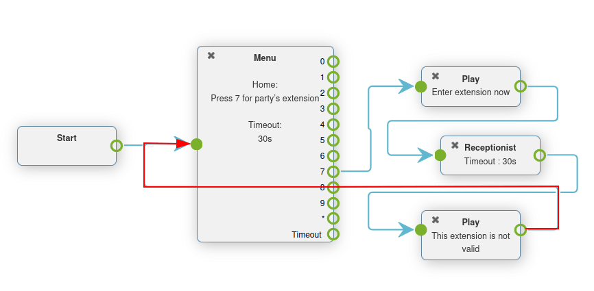

Información básica de los planes de marcación¶
Cuando alguien marca a una empresa, es posible que quieran hablar con soporte al cliente, el equipo de ventas o incluso con una persona en específico. Es posible que la persona que esté marcando también quiera obtener información sobre el negocio, como a qué hora está abierta una tienda. Por otro lado, también es posible que quieran dejar un mensaje de voz para que alguien de la empresa les regrese la llamada. Las empresas pueden gestionar las llamadas entrantes gracias a los planes de marcación de Axivox.
Si usa una arquitectura de llamada adecuada con un plan de marcación, las personas que llamen llegarán al personal indicado, o a la información correcta, de forma rápida y eficiente.
En este documento se explica la configuración básica de un plan de marcación en Axivox.
Ver también
Para más información sobre planes de marcación avanzados, visite Planes de marcado avanzados.
Importante
El uso de un complemento del navegador para la ortografía puede dificultar el uso del editor visual en los planes de marcación. No utilice un traductor con la consola de gestión de Axivox.
Planes de marcación¶
Para acceder a los planes de marcación vaya a la consola de gestión de Axivox y haga clic en los Dial plans (planes de marcación) desde el menú en la izquierda.
Para agregar un nuevo plan de marcación desde la página Dial plans (plan de marcación) haga clic en el botón verde llamado guilabel:Add a new dial plan (agregar un nuevo plan de marcación).
Nota
Axivox no limita el número de planes de marcación que se pueden crear. Estos se pueden agregar e incluso mejorar en cualquier momento. Esto permite que se creen entornos con muchas configuraciones diferentes.

Para editar un plan de marcación existente, seleccione una de las siguientes opciones a la derecha del plan de marcación guardado:
Delete (borrar): esta acción borra el plan de marcación adjunto.
Edit (editar): esta acción permite que un usuario edite el plan de marcación.
Visual Editor (editor visual): esta acción abre una ventana de editor visual donde se puede ver y editar la arquitectura del plan de marcación.
Duplicate (duplicado): esta acción duplica el plan de marcación y lo coloca al final de la lista, con una extensión que es un número (+1) más larga que la extensión original.
Editor del plan de marcación (editor visual)¶
Cuando se hace clic en el Visual Editor (editor visual) para un plan de marcación en la página Dial plan (plan de marcación), aparecerá una ventana emergente de Dialplan Editor (editor de un plan de marcación),
Esta ventana emergente es el lugar donde la arquitectura o la estructura del plan de marcación se configura. En esta ventana aparecerá una GUI donde puede configurar y vincular varios elementos del plan de marcación.
Importante
Los planes de marcación nuevos se crean vacíos con opciones para Add (agregar) y Save (guardar) los New element (nuevos elementos).
El método para guardar dentro del Dialplan Editor (editor del plan de marcación) es diferente que cuando se hacen otras ediciones en la consola de gestión de Axivox ya que el botón de Save (guardar) se debe presionar antes de cerrar el (editor visual).
Después, antes de que se puedan hacer estos cambios en la plataforma de Axivox, el usuario debe hacer clic en Apply changes (aplicar cambios) en la esquina superior derecha de la página Dial plan (plan de marcación).
Desde la ventana emergente Dialplan Editor (editor del plan de marcación) los usuarios pueden agregar un nuevo elemento al plan de marcación. Para hacerlo, abra el menú desplegable New element (nuevo elemento) y seleccione el elemento deseado. Después, haga clic en Add (agregar).
Hacer esto agrega un elemento a la visualización del editor visual del plan de marcación que se está modificando. Este elemento se puede mover a donde se desee de entre varios elementos presentes en el plan de marcación.
Para conectar elementos en el plan de marcación haga clic y arrastre hacia afuera del icono (círculo abierto) en el lado derecho del elemento. De esta manera se mostrará un icono de (flecha). Después arrastre este icono de (flecha) al elemento deseado en el plan de marcación con el que se debe conectar.
Conecte el icono de (flecha) al círculo del lado izquierdo del elemento deseado.
Las llamadas se muestran en el plan de marcación de izquierda a derecha en el elemento.
Para poder configurar más un New element (nuevo elemento), haga doble clic en el elemento dentro del plan de marcación para que se muestre una ventana emergente, donde se puede realizar más personalizaciones.
Cada elemento tiene una ventana de configuración emergente diferente que aparece cuando se le hace doble clic.
Importante
Todos los elementos deben tener un destino final en el plan de marcación para que se pueda cerrar el flujo. Para hacerlo se debe implementar el elemento Hang up (colgar) o se debe indicar que el elemento regresará a los elementos Menu (menú) o Digital Receptionist (asistente virtual) en otro lado del plan de marcación.
Una vez que todos los elementos del plan de marcación y configuraciones estén completas, recuerde hacer clic en Guardar antes de salir de la ventana emergente Dialplan Editor (editor del plan de marcación). Después, haga clic en Apply changes (aplicar cambios) en la página Dial plans (planes de marcación) para asegurarse de que se están implementado en un Axivox en producción.
Elementos del plan de marcación¶
Los siguientes elementos están disponibles en el menú desplegable New element (nuevo elemento) al diseñar un plan de marcación en la ventana emergente Dialplan Editor (editor del plan de marcación).
Elementos básicos¶
Estos son algunos elementos básicos que se usan en planes de marcación en Axivox:
Call (llamar): llamar a una extensión o a la cola.
Play a file (reproducir archivo): reproducir un archivo de audio o un saludo de voz.
Voicemail (correo de voz): enviar a un correo de voz (terminal).
Hang up (colgar): colgar la llamada (terminal).
Queue (cola): adjuntar una cola de llamadas a un grupo de usuarios para responder una llamada.
Conference (conferencia): agrega un sala de conferencia a la que una persona que llama se pueda conectar.
Elementos básicos de enrutamiento¶
Los elementos de enrutamiento cambian o dirigen a la llamada, estos son elementos de enrutamiento básicos en Axivox:
Menu (menú): agregar un directorio de marcación directa y configura acciones descendentes (no terminal).
Switch: un control manual de prendido/apagado que puede desviar el tráfico de llamadas, según si se abrió (prendido) o cerró (apagado).
Asistente virtual: adjuntar un operador virtual que escuche extensiones a las que conectarse.
Elementos de enrutamiento avanzados¶
Estos son los elementos más avanzados que enrutan llamadas en Axivox:
Dispatcher (operador): cree un filtro de llamadas para enrutar el tráfico según la geolocalización de la persona que llama.
Access List (lista de acceso): crear una lista de acceso personalizada, con una preferencia de usuario VIP.
Time Condition (condición de tiempo): crear condiciones horarias para encaminar el tráfico entrante en días festivos u otras franjas horarias sensibles.
Multi-Switch: un mecanismo para crear rutas, apagarlas y prenderlas y desviar a las llamadas entrantes.
Elementos avanzados¶
Estos son los elementos más avanzados (sin enrutar) en Axivox:
Record (registro): la función de registro está activada (requiere un cambio de plan, que se activa en los ajustes de Axivox).
Caller ID (identificación de la persona que llama): reemplaza la identificación de la persona que llama con el número al que se llamó o un texto libre.
Importante
Los elementos del plan de marcación pueden configurarse haciendo doble clic en ellos y vincular diferentes aspectos de la consola Axivox.
Adjuntar a un número entrante¶
Para adjuntar un plan de marcación existente a un número entrante, vaya a la consola de gestión de Axivox y haga clic en Incoming numbers (números entrantes).
Después, haga clic en Edit (editar) a un lado del número al que se le debe adjuntar el plan de marcación.
Esto mostrará una página separada en la que el plan de marcación de número se puede modificar. Para hacerlo, seleccione Dial plan (plan de marcación) desde el menú desplegable del campo Destination type for voice call (tipo de destino para una llamada de voz). Después, seleccione el plan de marcación deseado desde el campo de Dial plan (plan de marcación) que aparece.
De este modo, cuando un número en específico llame el plan de marcación configurado se activa y se ejecutan todas las instrucciones para poder enrutar la llamada.
Finalmente, guarde los cambios y haga clic en Apply changes (aplicar cambios) en la esquina superior derecha.
Escenario de un plan de marcación básico¶
Aquí se muestra un escenario de plan de marcación básico para enrutar llamadas, donde los elementos adicionales se pueden agregar para expandir la configuración. Este escenario del plan de marcación básico incluye los siguientes elementos vinculados en .

Ver también
Esta configuración no incluye ningún enrutamiento básico o avanzado de llamadas. Para obtener más información sobre el enrutamiento de llamadas, consulte la siguiente documentación: Planes de marcado avanzados.